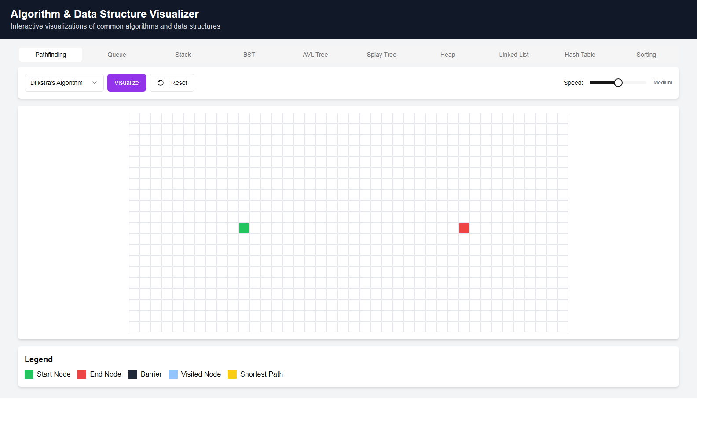

Algorithm Visualizer
Making invisible computer science visible, in the browser.

Try it liveThe problem. Algorithms are taught as pseudocode and big-O tables, so students memorize behavior they've never actually seen.
The calls I made. Instead of one polished demo, I built a single consistent surface for the whole first-year CS curriculum: pathfinding, sorting, and eight data structures from stacks to AVL and splay trees, all sharing the same visualize/reset/speed controls. Built with Next.js, React, and TypeScript, with direct manipulation: you place the start, the end, and the barriers yourself.
What shipped. A live, public visualizer anyone can use without an account or a setup step.